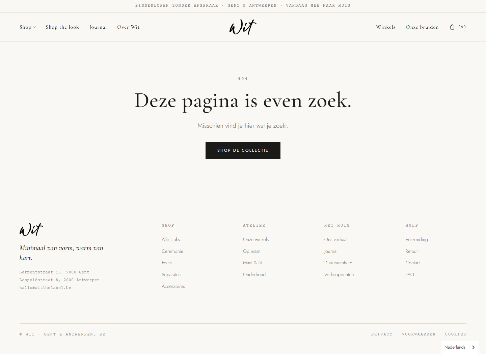
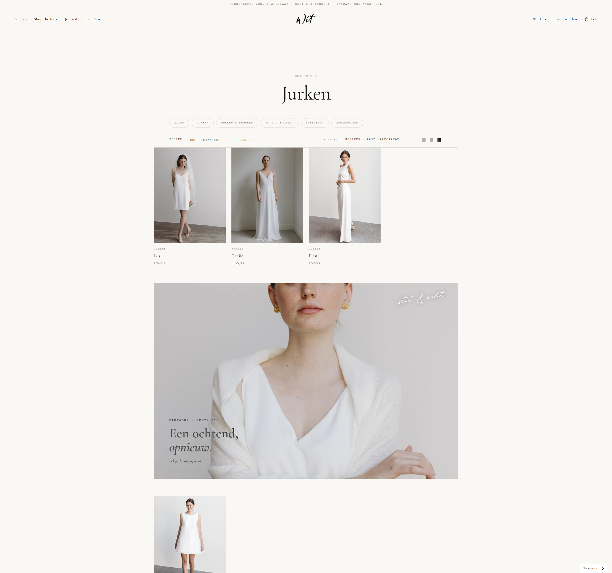
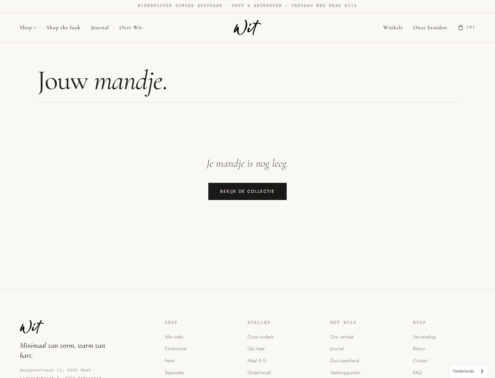
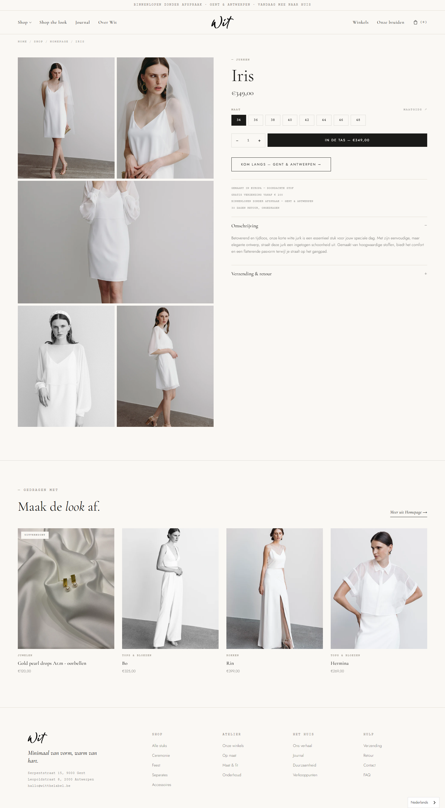
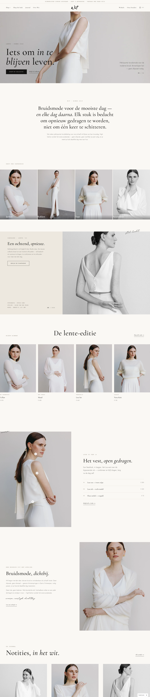
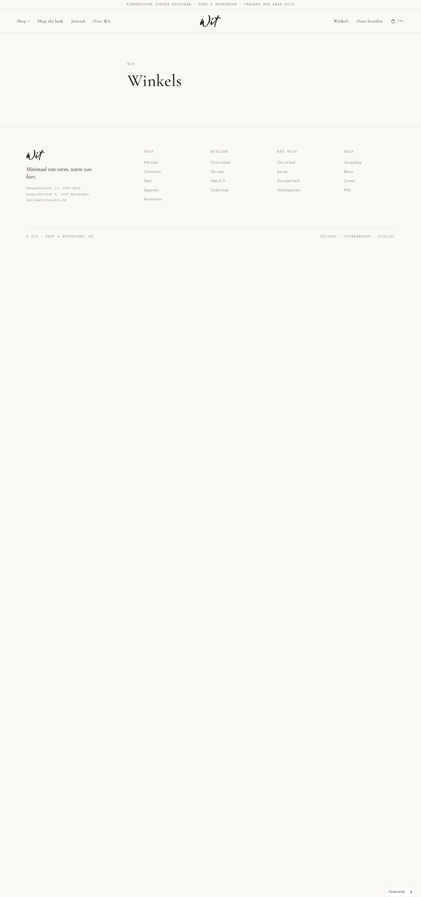
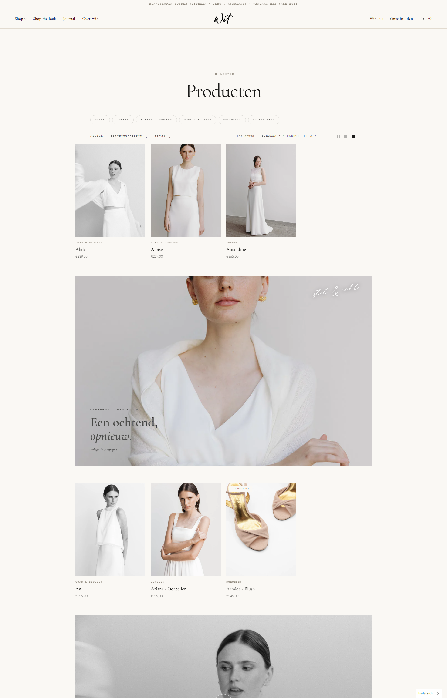

Doorloop van het draft-thema wit-theme-v1-1 op witthelabel.be (Shopify preview, thema-ID 200844378449), pagina per pagina, met de blik van een webdesigner. Elk punt heeft een schermafbeelding (klik om te vergroten).
Het thema gebruikt op dit moment standaard-fallbacklinks omdat er nog geen Shopify-navigatiemenu's zijn toegewezen. Veel van die links wijzen naar pagina's/collecties die niet bestaan → de bezoeker belandt op de 404.
Shop the look → /pages/lookbook, Journal → /blogs/journal, Over Wit → /pages/over-wit en Onze bruiden → /pages/bruiden geven allemaal 404. Die pagina's/blog bestaan niet in jouw winkel.
/collections/rokken, /collections/tops en /collections/tweedelig → 404. Jouw echte collecties heten "Broeken & Rokken" en "Bloezen en tops" (andere handles), en "Tweedelig" bestaat helemaal niet. Enkel /collections/jurken en /collections/accessoires werken.
/pages/maatgids), "Onderhoud" / "FAQ" (/pages/faq), "Verzending" (/pages/verzending), "Retour" (/pages/retour). Verkeerde bestemming: "Ceremonie", "Feest", "Separates" wijzen allemaal naar /collections/all (het zijn design-tijd-categorieën die niet bestaan).faq, verzending, retour, maatgids zitten al in het thema) en de footer-menukolommen koppelen aan echte menu's.
/pages/maatgids → 404.maatgids) aan; de link werkt dan automatisch.
Deze secties tonen verzonnen demo-inhoud omdat er nog geen echte data aan gekoppeld is. Een bezoeker ziet dus producten/artikels die niet bestaan.
/collections/all, niet naar een echt product.
/pages/winkels (bestaat — 200)page-sjabloon gezet met lege inhoud.
/collections/all — omdat er geen collectie aan elke chip is gekoppeld.
look-01…12.jpg). Mooi, maar het is stockmateriaal — niet per se jullie echte campagne/sfeerbeelden voor die secties.custom.subtitle en custom.fabric niet ingevuld zijn. De rest van de PDP (galerij, maten, in-de-tas, "Maak de look af") werkt goed.custom.subtitle + custom.fabric aanmaken en per product invullen (optioneel).Voor de balans — dit functioneerde correct in de preview: